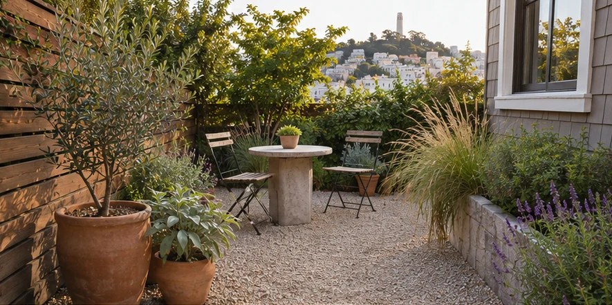

Garden design
We look at sun, drainage, and how you use the space, then draw up a planting plan.
LANDSCAPE DESIGN & CARE
Thoughtful planting, welcoming paths, and outdoor spaces that feel like home.
Request an estimate
Design, installation & care
From a new front path to a whole-yard refresh, we help you choose plants and materials that fit your site and how you want to use it.

Featured project
This concept pairs a gravel seating area with native grasses, sage, and pots of different heights. A compact layout leaves a clear path between the house and the seating area.
Fictional sample reviews
“We wanted a place to sit outside without losing the plants we already loved. The plan kept our olive tree and made the side yard feel usable.”
“The estimate made it clear what was included. We did the path first and saved the extra planting for next spring.”
“I used to spend every weekend watering the front beds. The new plants and drip system made the yard much easier to look after.”
Pick a project type and a timeframe, then add a few details about your space.
This demo does not send an estimate request.
Yes. We start by identifying healthy plants that support your design and can work around them.
Yes. A planting refresh or a better path can make a big difference in a compact space.
Access, site preparation, materials, and project size all affect the estimate.